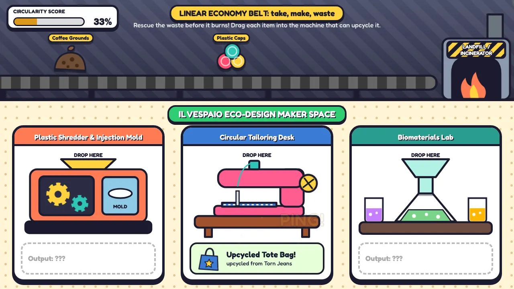

Training that plays like a game and works like the job.
I design learning simulations where people make real decisions, get it wrong safely, and see exactly why it matters. Five of them are on this page, and you can play every one.
Five simulations. All playable.
Each one starts from a mistake real people make, then turns it into something you can try, fail at safely, and learn from. Open any of them to play it and see how it was designed.

Wo ist der Löffel?
A 360° kitchen where beginners learn 58 German words by finding the real thing: opening drawers, the fridge and the oven, instead of matching text to text.
Get it wrong: you hear the name of what you actually clicked, with its article, and the word comes back later in the round.
Play and see how it's made
Changing a flat tire
Four tools, one car. Use them in the right order and you're back on the road. Use them in the wrong order and physics takes over.
Get it wrong: jack the car up before setting the parking brake and it rolls off the jack.
Play and see how it's made
Cleanroom gowning
Dress a technician for a Class 100 clean zone while a live particle counter watches every step.
Get it wrong: put the hairnet on after the coverall and dust falls onto the clean suit. Particle count: 10,000.
Play and see how it's madeCircular economy series

Close the loop
Rescue waste from a conveyor belt before it reaches the incinerator, and feed each item to the machine that can turn it into something new.
Get it wrong: hesitate and the item burns. Resource destroyed.
Play and see how it's made
Eco-Party Planner
Plan a school party on a balance scale: party fun on one side, planet waste on the other.
Get it wrong: choose the "compostable" cups and the greenwashing trap springs.
Play and see how it's madeHow I design a simulation
Every project above went through the same five steps. The examples show where each step ended up in the work.
-
Find the moment that matters
Not the topic, the decision. Where do people actually go wrong, and what does it cost them?
Cleanroom: the order you dress in, not the list of garments.
-
Make the consequence visible
Choose a mechanic that shows the effect of a choice the way the real world would.
Eco-Party: a scale that tips as the waste piles up.
-
Design the mistakes
Wrong answers are the most important content. Each one gets a reason, never just a red cross.
Flat tire: the wheel spins in the air, because there's no ground friction.
-
Build it to run anywhere
Lightweight HTML5 that works in a browser, inside Articulate Storyline, or in an LMS.
Drag and drop that stays accurate when the Storyline player is resized.
-
Play-test and tune
Adjust hints, difficulty and feedback until the challenge is fair and the lesson lands.
Löffel: three hint levels, each costing a few points, never all of them.
What I can build for you
Start with the problem. Most projects combine two of these.
Custom learning simulations
For procedures, safety and judgment calls, where a mistake on the job is expensive or dangerous.
You get a playable HTML5 simulation, from first concept to finished build.
Learning games for schools
For topics like sustainability or languages that work better as play than as worksheets.
You get a classroom-ready game, with notes for teachers on how to use it.
Interactions for Storyline
For when your course lives in Articulate Storyline but needs an interaction it can't do on its own.
You get a web object that drops straight into your Storyline project.
Course rescue
For a course people click through without learning anything.
You get a diagnosis and a redesigned module with practice at its centre.
About
People learn the most at the moment they get something wrong, as long as it's safe and they understand why. That's the moment I design for.
I'm Razin Abdullah, a learning experience designer with an M.Ed. from the Technical University of Munich. Over more than four years I've designed and evaluated learning for international teams and learners, from step-by-step procedures in high-stakes workplaces to games for classrooms and language beginners.
- M.Ed.Technical University of Munich
- 4+ yearsLearning design and evaluation
- Builds withHTML5, JavaScript, three.js, Articulate Storyline
Got a training problem? Let's make it playable.
Tell me who it's for and where people go wrong. I'll reply with how I'd turn it into a simulation.